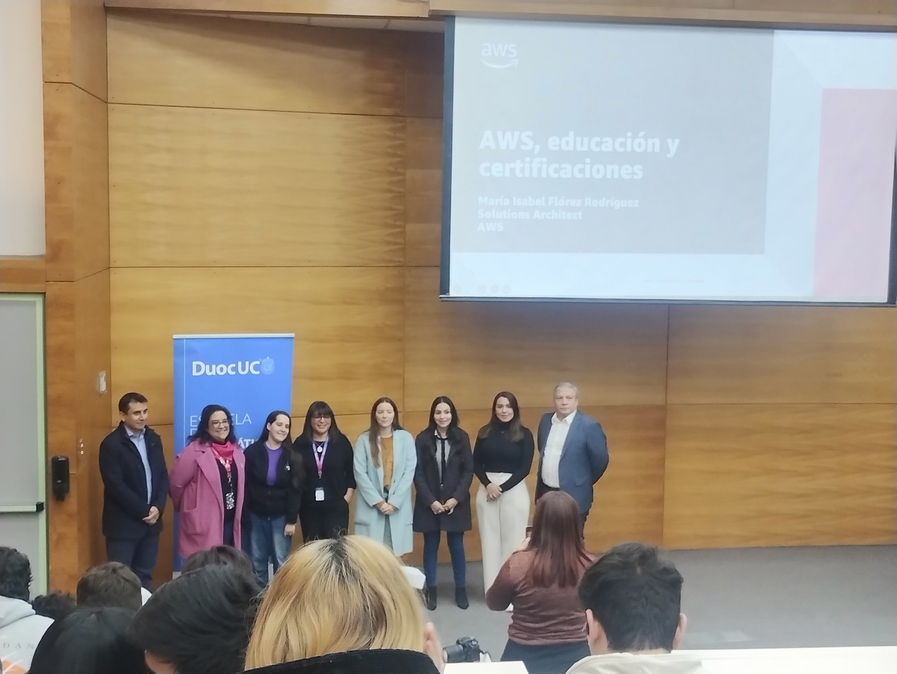
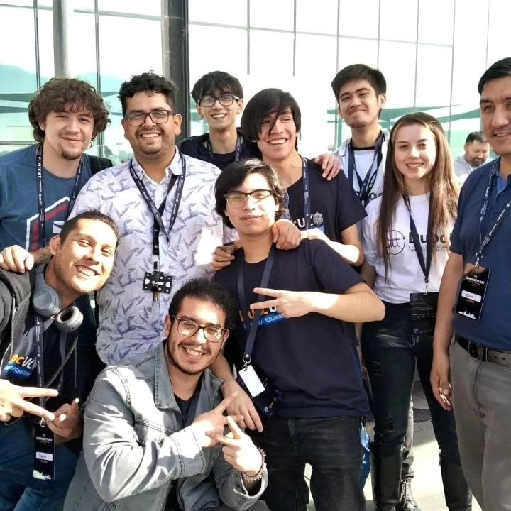
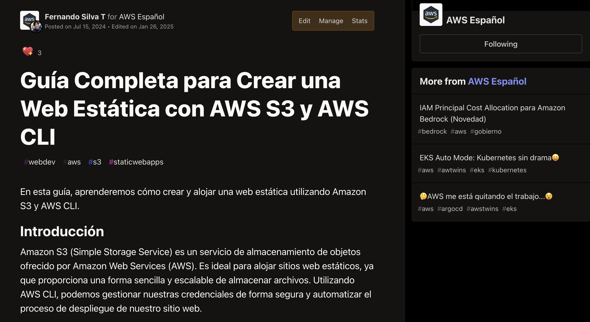
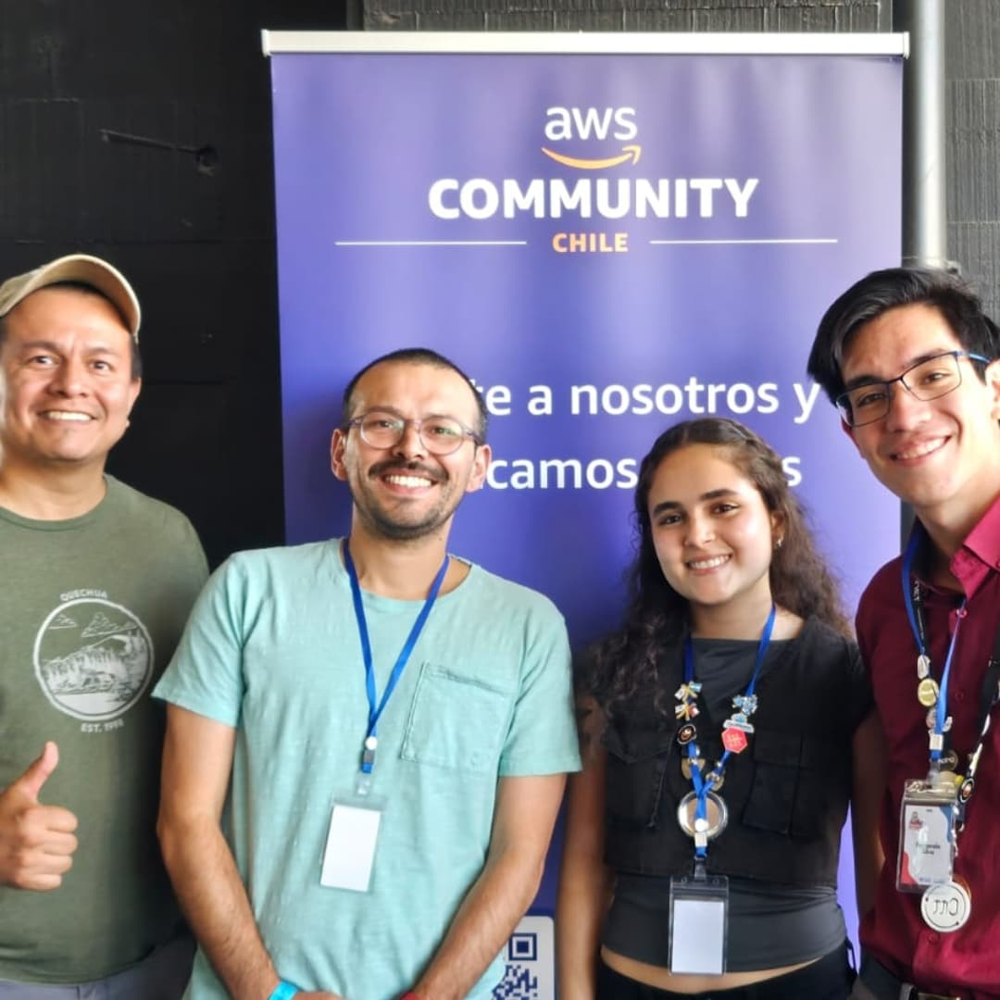
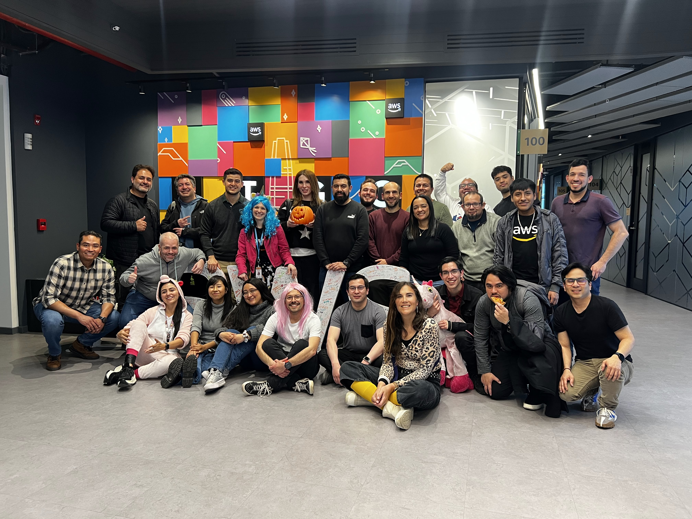
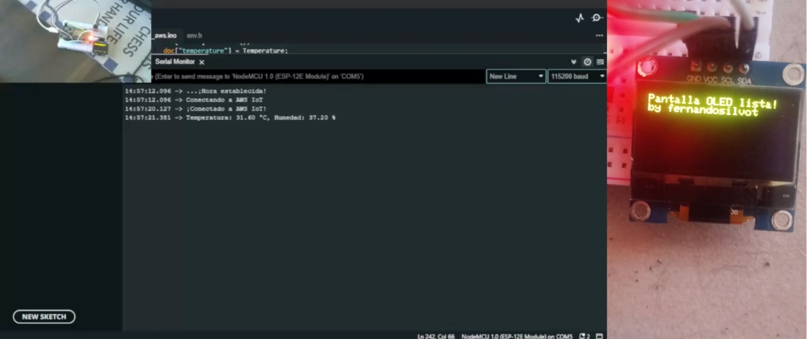
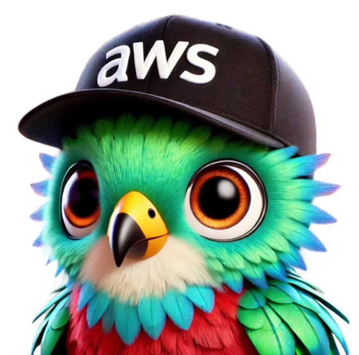
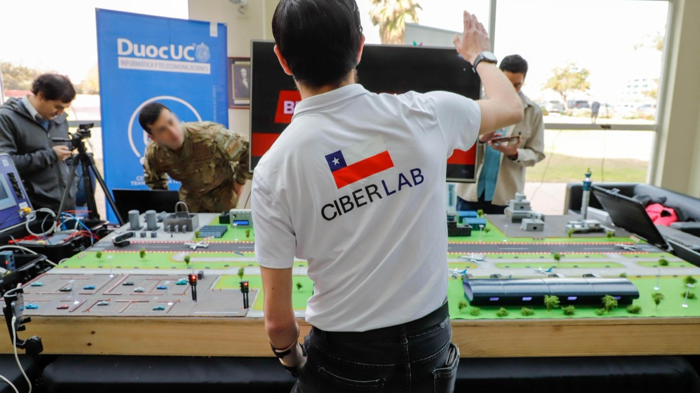
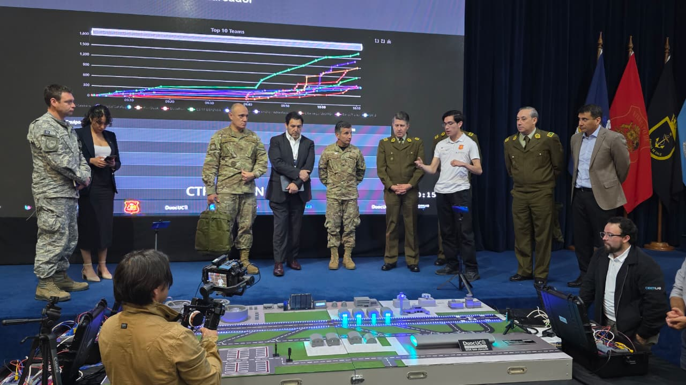
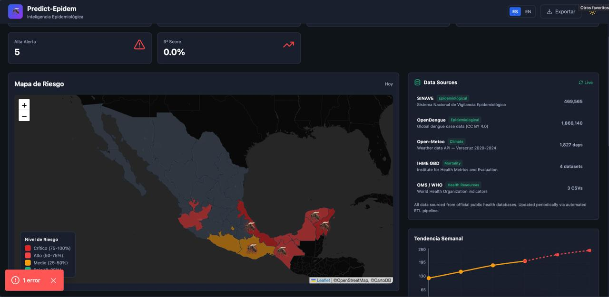

AWS COMMUNITY LEADERSHIP SUMMIT CONO SUR
Santiago, Chile · Abril 2026
¿Cuántos de ustedes tienen en su comunidad a alguien que tiene una idea increíble...
pero no se atreve a construirla?

De ser espectador en las charlas... a darlas.
A veces solo necesitas preguntar.
Y que alguien te diga: "ven, únete".


Recursos, créditos y red global de builders
Plataforma para publicar en español
Meetups, charlas y comunidad local
De ideas a proyectos reales



"Hace 35°C → Bedrock genera un chiste sobre el calor" 😂

Antes: participaba en CTFs
Después: diseñé la arquitectura completa
Builder individual → Líder técnico


El momento que cambió todo
Programa global
Ideas con IA
Impacto real

Análisis de texto no estructurado de reportes de salud
Modelos predictivos de series temporales
Escalable, costo-eficiente, replicable en la región
"Congratulations! Your project Predict Epidem has been selected as a finalist in the 10,000 AI Ideas program."
🔗 builder.aws.com/content/.../aideas-finalist-predict-epidem
5 lecciones de un builder imperfecto
¿Cuántos "Fernandos" hay en sus comunidades ahora mismo?
¿Cuántos tienen una idea pero no se atreven?
¿Qué necesitan de ustedes para dar el primer paso?
"Builders teaching builders.
Esa es la magia."
AWS Community Builder
"Las ideas se convierten en realidad cuando te atreves a construir y a ser parte de una comunidad."
¿Preguntas? 🎤